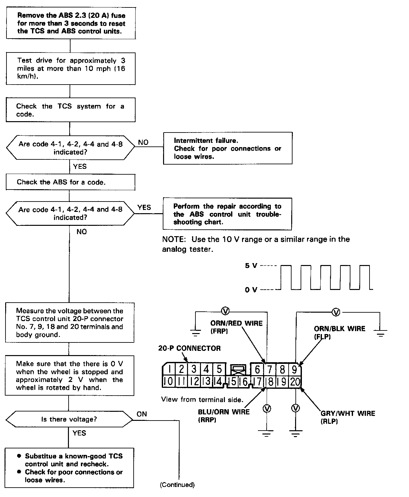
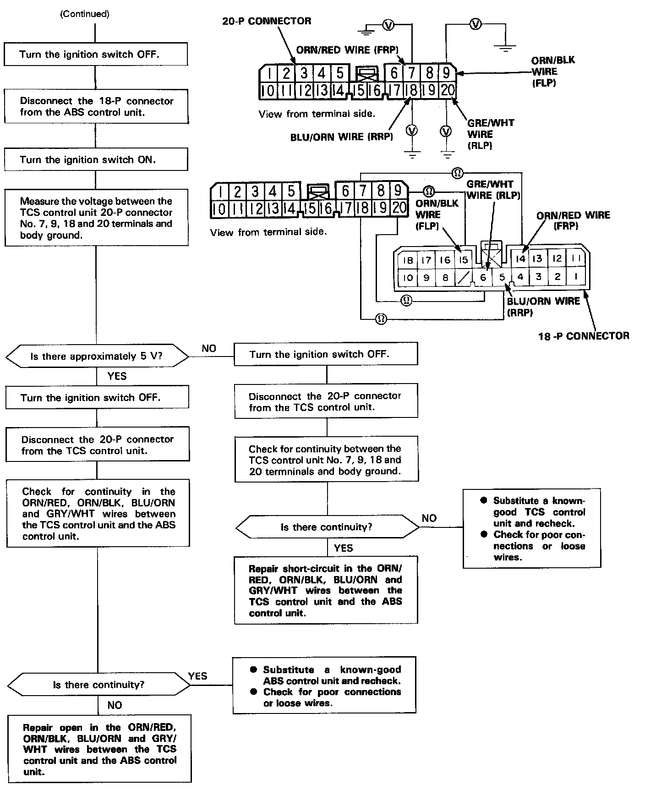

DTC 4-4
Diagnostic Flowchart - Part 1:

Part 2:

NOTE: The TCS indicator light comes on when the average speed of either the right or left front wheels exceeds 10 mph (18 km/h) and the ABS control unit signal stops for more than 3 seconds.